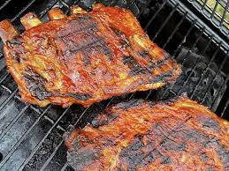

Grilled Ribs Recipe

Smoky and Tender BBQ Ribs
Nothing beats the rich, smoky flavor of perfectly cooked BBQ ribs.
Slow-cooked to tender perfection and coated in a savory, tangy sauce,
these ribs are a backyard favorite. Whether grilled over an open flame or
baked low and slow in the oven, they develop a deep caramelized crust that
locks in their juicy goodness.
Ingredients
- 2 racks of pork ribs
- 1/4 cup brown sugar
- 1 tablespoon smoked paprika
- 1 teaspoon black pepper
- 1 teaspoon garlic powder
- 1 cup barbecue sauce
- 2 teaspoons salt
Steps
- Make the spice rub.
- Trim the ribs, then season with the spice mix.
-
Cook the ribs on the grill according to the detailed recipe below.
- Brush the grilled baby back ribs with barbecue sauce.
- Grill for five more minutes.